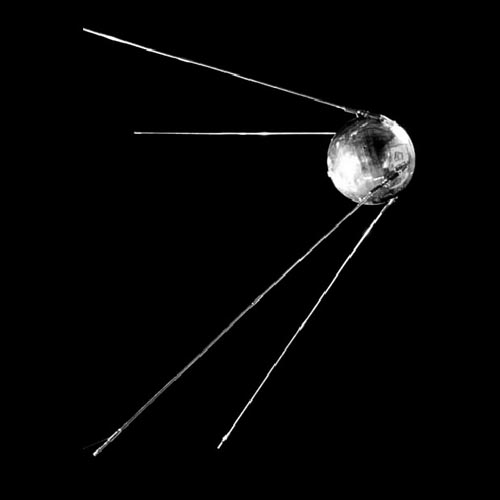
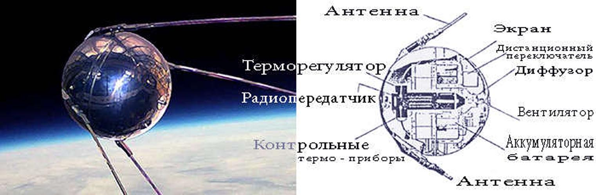

Спутник-1
Первый запуск первого искусственного спутника Земли.
Как с гордостью сообщала газета «Правда» 5 октября 1957 г.: " В результате большой напряженной работы научно-исследовательских институтов и конструкторских бюро создан первый в мире искусственный спутник Земли. По предварительным данным, ракета-носитель сообщила спутнику необходимую орбитальную скорость около 8000 метров в секунду. В настоящее время спутник описывает эллиптические траектории вокруг Земли, и его полет можно наблюдать в лучах восходящего и заходящего Солнца при помощи простейших оптических инструментов (биноклей, подзорных труб и т. п.).
Успешным запуском первого созданного человеком спутника Земли вносится крупнейший вклад в сокровищницу мировой науки и культуры. Научный эксперимент, осуществляемый на такой большой высоте, имеет громадное значение для познания свойств космического пространства и изучения Земли как планеты нашей солнечной системы.
«Спутник-1» — первый в мире искусственный спутник Земли, советский космический аппарат, запущенный на орбиту 4 октября 1957 года (в течение Международного геофизического года).
Кодовое обозначение спутника — «ПС-1» («Простейший Спутник-1»). Запуск был осуществлён с 5-го научно-исследовательского полигона Министерства обороны СССР «Тюра-Там» (получившего впоследствии открытое наименование космодром «Байконур») на ракете-носителе «Спутник», созданной на базе межконтинентальной баллистической ракеты «Р-7».Перейти к разделу «Запуск и полёт»
Корпус спутника ПС-1 состоял из двух силовых полусферических оболочек диаметром 58,0 см из алюминиево-магниевого сплава АМг-6 толщиной 2 мм со стыковочными шпангоутами, соединёнными между собой 36 шпильками М8×2,5. Перед запуском спутник был заполнен сухим газообразным азотом под давлением 1,3 атмосферы. Герметичность стыка была обеспечена прокладкой в виде кольца из вакуумной резины с прямоугольным сечением. Верхняя полуоболочка имела меньший радиус и прикрывалась полусферическим внешним экраном толщиной 1 мм для обеспечения теплоизоляции. Поверхности оболочек полировались и обрабатывались для придания им специальных оптических свойства. Внутри герметичного корпуса были размещены: блок электрохимических источников (серебряно-цинковые аккумуляторы); радиопередающее устройство ПС-1; вентилятор, включающийся от термореле при температуре выше +30 °С и выключающийся при понижении температуры до +20…23 °С; термореле и воздуховод системы терморегулирования; коммутирующее устройство бортовой электроавтоматики; датчики температуры и давления; бортовая кабельная сеть. Масса — 83,6 кг. Масса источников питания составляла около 50 кг
Характеристики
Масса 83,6 кг
Размеры максимальный диаметр 0,58 м
Антенна:4шт, длиной 2,4 м и 2,9
серебряно-цинковые аккумуляторы массой около 50 кг